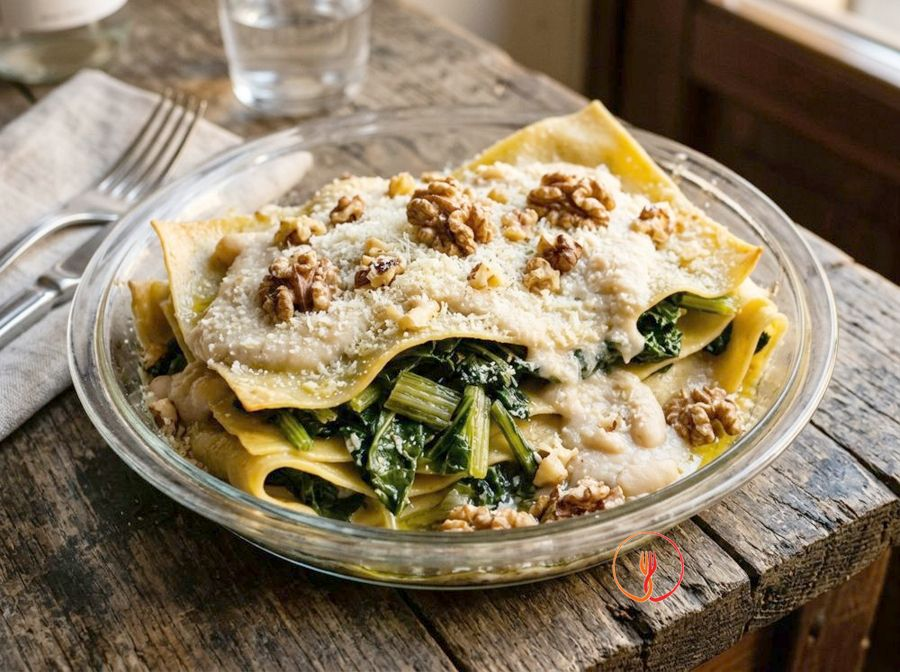

Baked Savoury Bread, Egg and Swiss Chard Pudding
An economical version of a savoury tart that uses leftover bread as a starchy base. A nutritious single-course meal combining fibre from leafy greens with high-quality egg protein.
Ingredients
- Sliced stale white bread250 g
- Fresh Swiss chard600 g
- Medium eggs4 pcs
- Semi-skimmed milk300 ml
- Grated Edam or Gouda cheese80 g
- Garlic1 spicchio
- Nutmeg1 pizzico
Allergens
Gluten, Eggs, Milk
Method
- Begin by cleaning the fresh chard (600g): wash thoroughly under running water and separate the white stalks from the green leaves. Dice the stalks finely and cut the leaves into strips about two centimetres wide, keeping them separate as they have different cooking times. The chef's secret is to dry the leaves well after washing to prevent them from releasing too much water during sautéing.
- Take a large non-stick frying pan and warm a lightly crushed garlic clove; once the aroma is released, add the chard stalks first. Cook over medium heat for about 3 minutes, then add the leaves and continue cooking for another 7 minutes until they are completely wilted and tender. Afterwards, remove the garlic and let the vegetables cool in a colander, pressing lightly to remove excess liquid that would spoil the bake's texture.
- In a large bowl, crack the 4 medium eggs and whisk them vigorously by hand with 300ml of semi-skimmed milk and a pinch of freshly grated nutmeg. Continue whisking for a couple of minutes until the mixture is slightly frothy and well combined, seasoning with a moderate amount of salt. Chef's tip: use room temperature eggs to encourage a more stable and silky emulsion with the milk.
- Take the stale bread (250g) and cut it into even cubes of about 2 centimetres, aiming for uniform size to ensure consistent absorption. Completely submerge the bread cubes in the egg and milk mixture, stirring gently so every piece is well soaked. Let it rest for at least 10 minutes: the bread should become soft but not fall apart, transforming into a hydrated and rich base.
- Take the cooled chard and squeeze it once more with your hands to ensure it is dry, then add it to the bowl with the soaked bread. Incorporate 40g of grated Edam or Gouda cheese (half of the total amount) and mix with a spatula using upward folding motions. The goal is to achieve a thorough distribution of the vegetables and cheese, avoiding bread lumps or leaf clusters.
- Prepare a rectangular or circular baking dish, lightly greasing it or lining it with baking parchment, and pour the mixture inside, levelling the surface with the back of a spoon. Sprinkle the remaining 40g of grated cheese evenly over the entire surface, focusing on the edges which tend to get crispier. This step ensures the bake develops a savoury, golden crust, essential for the dish's textural contrast.
- Place the bake on the middle rack of a preheated static oven at 180°C and bake for approximately 25-30 minutes. Monitor the cooking: the surface should appear a beautiful deep golden colour and, when pressing lightly in the centre with a finger, it should feel firm and springy. The chef's tip is not to overcook it to prevent the inside from becoming too dry and losing its pleasant creaminess.
- Once removed from the oven, resist the temptation to serve immediately and let the bake rest for at least 5-10 minutes at room temperature. This brief waiting period allows the egg proteins and bread fibres to stabilise and redistribute residual moisture within the tart. This will result in perfectly square, compact slices when cut, releasing the full aroma of the chard and nutmeg in a balanced way.
Nutrition facts (estimate)
| Per serving (285 g) | Per 100 g | |
|---|---|---|
| Energy | 1540 kJ / 368 kcal | 540 kJ / 129 kcal |
| Protein | 21.2 g | 7.4 g |
| Carbohydrates | 38.5 g | 13.5 g |
| of which sugars | 6.8 g | 2.4 g |
| Fat | 13.6 g | 4.8 g |
| of which saturates | 6.9 g | 2.4 g |
| Fibre | 4.1 g | 1.4 g |
| Salt | 1.45 g | 0.5 g |
AI estimates based on average CREA / USDA data: indicative only, not a substitute for medical or dietitian advice.
Open the recipe in the app for the shopping list, ingredient sheets and nearby shops.
Related recipes
 Lombardia · 55 minSwiss chard and chestnut tartlet with a herb breadcrumb crust
Lombardia · 55 minSwiss chard and chestnut tartlet with a herb breadcrumb crust 40 minBaked Swiss Chard Gratin with Turmeric Béchamel and Pecorino
40 minBaked Swiss Chard Gratin with Turmeric Béchamel and Pecorino 45 minSteamed Swiss chard rolls with a mushroom and smoked tofu filling
45 minSteamed Swiss chard rolls with a mushroom and smoked tofu filling
Toscana · 70 minOpen lasagna with Swiss chard, walnuts and cannellini bean cream